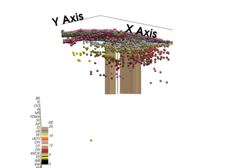
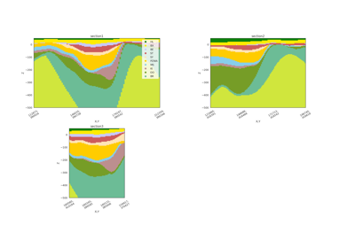

GemPy GeoTop Documentation¶
- Release:
0.1
- Date:
13 May 2024
- Source:
Explore Our Guides¶
- orphan:
All Examples¶
Examples of deper settings¶
Internal Structures¶
I do not rememeber what this was about. Ask Freek
South Model¶
Examples around Eindhoven. Relatively comformable layers with multiple faults

Model 1 - Reading GeoTop Data

Model 2 - Computing Model
Zeeland¶
Examples around Zeeland. Unconformity and dipping layers
Acknowledgements¶
This project is a collaboration between TNO geological modeling group and Terranigma Solutions GmbH